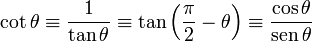

ALGEBRAICAS
En las funciones algebraicas, las operaciones que hay que efectuar con la variable independiente son:
Adicion
Sustitucion
Multiplicacion
Division
Potenciacion
Radiacion
TRIGONOMETRICAS
En matemáticas, las funciones trigonométricas son las funciones establecidas con el fin de extender la definición de las razones trigonométricas a todos los números reales y complejos.
Las funciones trigonométricas son de gran importancia en física, astronomía, cartografía, náutica, telecomunicaciones, la representación de fenómenos periódicos, y otras muchas aplicaciones. Son:
Seno:
Coseno:
Tangente:
Cotangente:

Secante:
Cosecante:
.
INVERSAS TRIGONOMETRICAS
Las funciones trigonométricas inversas son las funciones inversas de lasrazones trigonométricas (seno, coseno y tangente).
as razones trigonométricas no son funciones biyectivas (1-a-1), por lo que no son invertibles. Para que lo sean, es necesario restringir su dominio y así poder hallar la función inversa.
LOGARITMICAS
El logaritmo de un número y es el exponente al cual hay que elevar la base b para obtener a y. Esto es, si b > 0 y b es diferente de cero, entonces
logb y = x si y sólo si y = bx.
EXPONENCIALES
La derivada de la función exponencial ea igual a la misma función por el logaritmo neperiano de la base y por la derivada del exponente.